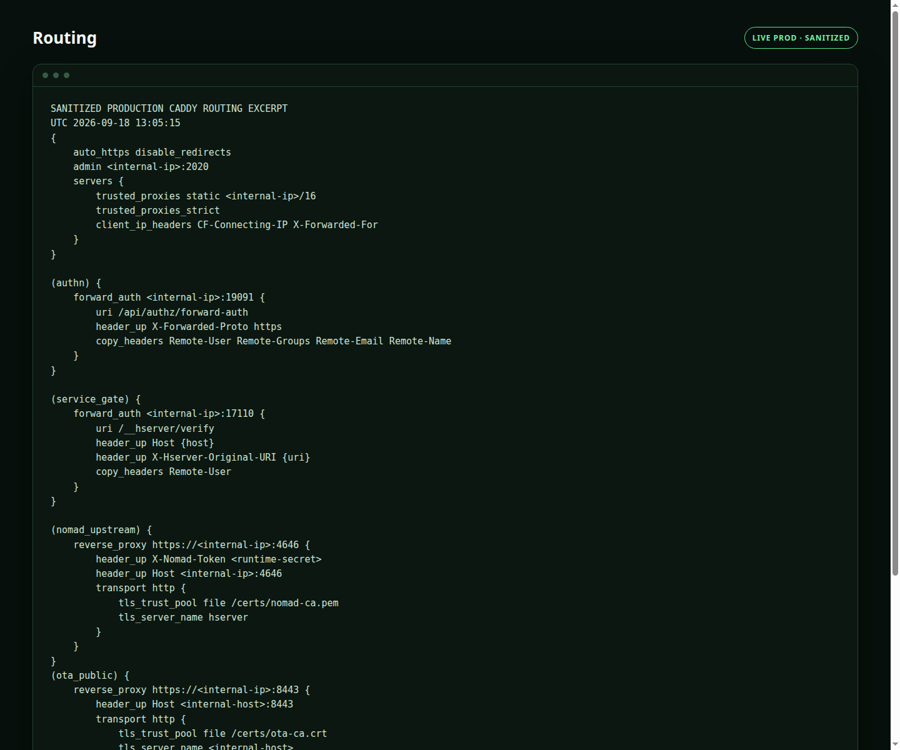
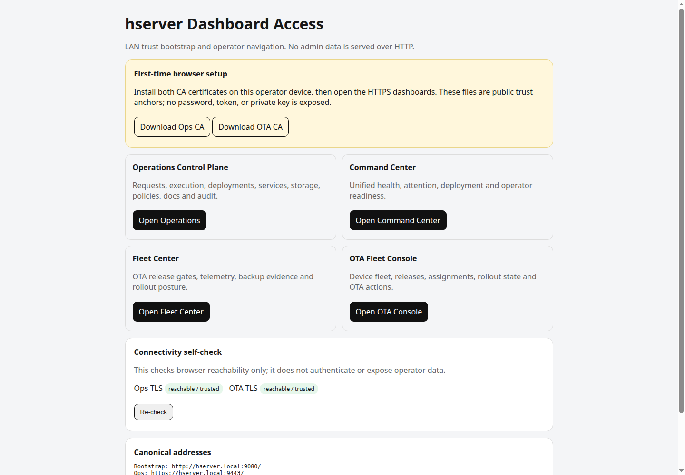

Caddy User Problems: TLS & Upstreams · advanced
How I Proxy from One Caddy to Another Without tls_insecure_skip_verify
Internal HTTPS between proxies is useful only when the caller can verify the upstream identity.
How I Proxy from One Caddy to Another Without tls_insecure_skip_verify
Lab objective. Internal HTTPS between proxies is useful only when the caller can verify the upstream identity.
I treat this as a reproducible lab rather than a configuration guessing exercise. The observed condition is simple: An edge Caddy can proxy to an internal tls internal Caddy only when verification is disabled. The experiment is designed to isolate the network, TLS, routing and application variables one at a time.
Article format: Upstream private-CA verification guide.

Production capture — Live production Caddy routing, trusted-proxy, forward-auth and internal-TLS patterns; private addresses and secret values removed.

Production capture — Actual production dashboard-access UI served through the home-server Caddy stack.
Build the smallest reproduction
I remove every optional layer I can without changing the failure. CDN caching, SSO, extra headers, a second reverse proxy, observability middleware and convenience redirects all make sense in production, but they create more possible owners during diagnosis. The smallest reproduction should answer one question at a time.
The core configuration I start from is:
reverse_proxy 192.168.1.20:9443 {\n transport http {\n tls_trust_pool file /certs/internal-ca.crt\n tls_server_name internal-gateway.local\n }\n}
I am not claiming this is the final production configuration. It is a diagnostic baseline. If the failure persists here, I have proved the problem is fundamental to routing, network reachability, TLS, or the upstream contract. If the failure disappears, I add the removed policy back one layer at a time until the exact interaction returns.
The same rule applies to commands. A curl from my laptop is not equivalent to a request made by a Caddy container. A DNS lookup on the host is not equivalent to Docker DNS inside the Caddy network. A browser success through Cloudflare does not prove the origin certificate is valid from the tunnel process. Reproduction has to run from the same execution context as the component making the failing hop.
Walk one request end to end
I pick one concrete request and narrate it as if I were the packet. The browser resolves the public name, chooses an address and protocol, establishes transport, negotiates TLS if needed, and sends Host plus headers and a path. Caddy selects a server and route, evaluates matchers, may run authentication or rewrites, chooses an upstream, opens or reuses a connection, forwards a modified request, receives the upstream response, applies response handling, then sends the result back through any CDN or tunnel.
In this specific case the key discontinuity is: The edge does not trust the internal CA, and an IP dial target may also not match the leaf certificate name. Trust and identity are two separate checks. That is the point in the walk where the data stops meaning what the next component expects. Everything before it can be technically healthy and still contribute to a broken user experience.
Walking the request also exposes hidden state. DNS cache, connection reuse, TLS session state, auth cookies, CDN cache, health-check state and load-balancer memory can all make two apparently identical requests take different paths. When a bug is intermittent, I include that state in the walk instead of treating the request as a stateless curl command.
Security boundary
Caddy is often trusted with TLS private keys, authentication decisions, client-address normalization and routing to services that are otherwise private. That makes convenience changes security changes even when they look like ordinary troubleshooting.
For this problem, I ask a narrow question: what new authority would the proposed fix create? The underlying cause is The edge does not trust the internal CA, and an IP dial target may also not match the leaf certificate name. Trust and identity are two separate checks. If I solve that by broadening trust instead of correcting the mismatch, the edge may start accepting information from sources that were never meant to be authoritative. Examples include trusting arbitrary X-Forwarded-For values, exposing the admin API, passing user-controlled identity headers, or disabling certificate verification on an internal hop.
The safer pattern is to keep trust directional and explicit. The browser trusts Caddy's public or private certificate. Caddy trusts only the upstream CA it needs. The application trusts identity headers only from Caddy. Caddy trusts client-IP headers only from known ingress proxies. Admin endpoints remain local or tightly controlled. This chain is easier to audit because every identity claim has one writer and one verifier.
Read the configuration as a contract
The fix pattern for this case is: Mount the internal root CA, configure tls_trust_pool and set tls_server_name when the dial address differs from the certificate hostname. I read that sentence as an ownership rule, not as a copy-paste instruction. The Caddyfile should say which host or path Caddy owns, which upstream it contacts, and which transformations are intentional. Anything not required for that contract stays out of the first version.
A minimal expression is:
reverse_proxy 192.168.1.20:9443 {\n transport http {\n tls_trust_pool file /certs/internal-ca.crt\n tls_server_name internal-gateway.local\n }\n}
From there I ask what each directive changes. Does it change routing? Does it change the request seen by the upstream? Does it change TLS trust or SNI? Does it change response status or body? Does it change browser policy? A directive without a clear answer is a candidate for removal during diagnosis.
I also inspect the adapted configuration when route behavior is surprising. The Caddyfile is an adapter-friendly human format; the runtime sees structured configuration. Looking at the adapted form is especially useful around handle blocks, route blocks, matchers, imported snippets and global server options because it shows what the server will actually execute instead of what indentation makes me think it will execute.
Diagnostic ladder
I move down the ladder in order instead of changing several layers at once:
- verify the edge trusts the root
- match SNI to the leaf certificate
- mount CA read-only
- treat verification failure as real failure
Each check has one interpretation. If the first failing step is name resolution, I do not change TLS. If TCP connect works but TLS identity fails, I do not rewrite application routes. If the upstream answers correctly from Caddy's context but the browser still fails, I move back toward the edge, cache, authentication, or browser policy.
This order preserves causality. Reverse-proxy incidents become slow when operators collect commands rather than evidence. The useful output of a command is not merely success or failure; it is a boundary decision. A successful DNS lookup narrows the problem. A successful socket connect narrows it again. A valid TLS handshake narrows it further. By the time I reach the application response, most unrelated hypotheses are already eliminated.
I write down the first failed contract before changing anything. That note becomes the rollback point for the experiment and later becomes part of the incident record. It also prevents a classic failure mode: a configuration change happens to make the symptom disappear, but nobody knows whether it fixed routing, changed timing, bypassed security, or merely moved the request to a different path.
Test matrix
| Test | What it proves |
|---|---|
| Origin path | Call the upstream from the Caddy network context. |
| Proxy path | Call the Caddy hostname or listener directly. |
| Full user path | Call through CDN, tunnel, auth and browser-visible hostname. |
| Negative path | Deliberately send the condition that should be rejected. |
| Recovery path | Remove the dependency or break it, then restore it and observe recovery. |
A test matrix prevents the common mistake of proving only the happy path. A valid HTTPS request does not prove a forged forwarded-IP header will be rejected. A successful health probe does not prove user traffic survives when one upstream disappears. A SPA homepage does not prove deep links, API misses and WebSockets route correctly. I deliberately include a negative case because security and routing boundaries are defined as much by what must fail as by what must succeed.
I run the matrix before and after the fix. The before-state confirms the reproduction is real; the after-state proves the change corrected the intended boundary rather than simply changing timing. For higher-risk changes such as authentication, retries, client-IP trust or TLS verification, I keep the matrix as a regression test so the same shortcut cannot quietly return in a later refactor.
Why the obvious fixes often make it worse
The tempting shortcut here is: Do not turn off verification to make a private-PKI design appear healthy. That shortcut usually attacks the visible symptom while weakening the boundary. In reverse-proxy work, a workaround can be more dangerous than a clean failure because it turns a deterministic error into silent misrouting or weaker verification.
Typical examples are disabling TLS verification instead of fixing trust, hard-coding a container IP instead of fixing Docker DNS, returning HTTP 200 for an outage instead of preserving failure semantics, trusting forwarded client headers from everywhere, or restarting the proxy repeatedly instead of proving which config is active. Every one of those can make a test green while making the architecture less trustworthy.
I prefer a fix that survives the next restart, container recreation, certificate renewal, user session, or software upgrade. That usually means correcting the ownership model rather than suppressing the check that exposed it. If the network name is wrong, fix naming. If the certificate identity is wrong, fix identity. If the app cannot live under a subpath, use a subdomain or configure the app. If the auth gateway lacks original request context, pass only the context it actually needs.
Tradeoffs I accept deliberately
A reverse proxy can usually solve the immediate symptom in several ways. The important question is which solution preserves the properties I care about: explicit trust, stable naming, low operational surprise, debuggable routing and correct HTTP semantics. I do not optimize for the shortest Caddyfile if the shorter version hides ownership.
For this problem, the preferred direction is: Mount the internal root CA, configure tls_trust_pool and set tls_server_name when the dial address differs from the certificate hostname. That choice may require one more Docker network, one more CA mount, one more application base-URL setting, or one more health endpoint. I accept that extra configuration when it makes the boundary explicit and testable. I am less willing to accept a shortcut that works only while a container IP stays unchanged, a browser ignores a warning, or an operator remembers a hidden dependency.
I also distinguish product tradeoffs from infrastructure tradeoffs. A maintenance page that returns 200 may look better behind a CDN but changes monitoring semantics. A wildcard certificate simplifies certificate count but increases key authority. A subnet of trusted proxy addresses can simplify client-IP handling but broadens the trust boundary. These are legitimate choices when documented; they become bugs when introduced accidentally during troubleshooting.
Production operations
A configuration that works once is not yet an operational solution. I want to know what happens during reload, restart, certificate renewal, container recreation, upstream failure, DNS change and a partial outage. The production version should have a predictable state transition for each of those events.
I validate before reload, reload instead of restarting for ordinary config changes, and probe the exact route I changed after the reload. When there are multiple Caddy instances, I record which instance owns the public hostname, which one terminates internal TLS, and which one is application-local. That prevents an operator from making a correct edit to the wrong proxy.
I also keep rollback small. The best rollback is often the previous validated Caddyfile plus the ability to gracefully reload it. If the change included a DNS record, private-CA trust distribution, application base URL, Docker network, or authentication gateway setting, those are separate rollback items. Treating the Caddyfile as the only state in the system is how partial rollbacks create new failures.
Draw the boundary before touching config
The root cause lives at a boundary. In this case, the technical reason is: The edge does not trust the internal CA, and an IP dial target may also not match the leaf certificate name. Trust and identity are two separate checks. That sentence is more useful than the status code by itself. A 502, 404, redirect, TLS error or browser failure is an outcome; the boundary tells me which component can actually fix it.
I sketch the path as:
client -> Caddy edge -> Caddy / private CA / reverse proxy boundary -> upstream application -> response
Then I annotate each arrow with one question: can the previous component resolve the next hop, connect to it, negotiate the expected protocol, preserve the intended identity, and receive the expected response? This turns a broad reverse-proxy problem into a short sequence of falsifiable checks.
The important operational distinction is between reachability, identity, and application semantics. Reachability asks whether the next socket can be opened. Identity asks whether Host, SNI, forwarded client information, or authentication state still means what the downstream expects. Application semantics asks whether the request path, redirect, retry, health probe, or browser policy is valid. Caddy sits at the intersection of all three, which is why a problem can appear to be 'a Caddy problem' even when the correction belongs elsewhere.
Observability that answers the real question
I want logs and metrics that tell me which leg failed, not simply that Caddy is running. Access logs should let me identify host, URI, status, duration and the client identity Caddy actually derived. Runtime error logs should explain dial, DNS, TLS or handler failures. Upstream health and request metrics should show when one backend is failing while the proxy process remains healthy.
The most useful dashboard separates three states: edge availability, upstream availability and user-visible success. Those can disagree. Caddy can be healthy while an upstream is down. An upstream can be healthy while a route matcher sends users somewhere else. Both can be healthy while a browser policy blocks the frontend. A single green process-health light does not capture those distinctions.
During an incident, I correlate one request through all available evidence. I note the public timestamp, Caddy access record, any proxy error, upstream log and monitoring sample. That gives me a timeline rather than a pile of independent logs. If the request passed through Cloudflare or another proxy, I keep its cache and origin status separate from Caddy's status so one layer does not impersonate another.
Rollout and rollback plan
I stage the change in the smallest reversible sequence. First I validate syntax and adaptation. Second I change only the dependency required for the fix, such as a network attachment, certificate trust file, application base URL or proxy route. Third I reload Caddy gracefully. Fourth I run the test matrix. Only after the user path is proven do I remove temporary diagnostics.
Rollback is the mirror image. I keep the previous validated configuration, but I also record non-Caddy state changed during the rollout. If I added a Docker network, changed a Cloudflare origin name, distributed a private CA, changed a cookie domain, or enabled a new application setting, restoring only the old Caddyfile may leave the system in a mixed state.
For high-risk authentication or client-identity changes, I test rollback before I need it. I maintain a local or out-of-band route to the host so a bad edge policy does not lock me out of the machine that must repair it. That is operationally more valuable than another layer of clever configuration.
Myths that slow this problem down
Myth 1: If the backend works in my browser, Caddy can reach it. A browser test proves reachability from the browser's network namespace, not from a container or remote edge. Myth 2: A 502 means the application crashed. It often means Caddy failed before an application response existed. Myth 3: More headers make proxying more compatible. Caddy already handles common forwarding and WebSocket behavior; random header additions can create new identity problems.
Myth 4: HTTPS is only encryption. In a proxied system it is also identity. SNI, Host, CA trust and certificate names can disagree even when the TCP route is correct. Myth 5: Restarting proves the new config is active. Restarting changes process state and can create downtime; graceful reload plus a post-change probe is the better configuration lifecycle.
Myth 6: The fastest workaround is the best production fix. In this case the anti-pattern is: Do not turn off verification to make a private-PKI design appear healthy. A production fix should survive routine events such as a reboot, container recreation, certificate renewal and software upgrade without relying on hidden memory.
FAQ
Should I change Caddy first?
Only after the evidence says Caddy owns the failing boundary. Prove reachability, protocol and upstream behavior from Caddy's context before adding directives.
Should I restart Caddy?
Not for an ordinary configuration change. Validate and reload gracefully so the working configuration remains available if the new one cannot load.
Should I disable TLS verification?
No as a normal fix. Establish the correct CA trust and server name so encrypted transport also preserves identity.
Can I trust forwarded headers?
Only from proxies you explicitly trust. Client-controlled forwarding headers are not identity.
What should I monitor?
User-visible status, Caddy access/error signals, and upstream health separately. A green proxy process is not proof the application path is healthy.
Sources and version notes
The configuration examples in this article are intentionally minimal and should be checked against the Caddy version and modules actually running in production. Caddy evolves, and behaviors around upstream HTTPS, certificate automation, plugins and transports can change between releases.
- https://caddyserver.com/docs/caddyfile/directives/reverse_proxy
I treat documentation as the authority for directive semantics and public issue reports as evidence of failure patterns, not as universal configuration recipes. A GitHub issue or forum post can show that a symptom exists; the production fix still has to be validated against the local network, Caddy build, upstream application and trust model.
The rule I keep
Mount the internal root CA, configure tls_trust_pool and set tls_server_name when the dial address differs from the certificate hostname.
The durable lesson is not the exact snippet. The durable lesson is that the edge does not trust the internal ca, and an ip dial target may also not match the leaf certificate name. trust and identity are two separate checks. Once that ownership boundary is explicit, Caddy becomes easier to operate because every directive has a reason, every failure has a first diagnostic step, and every change has a test.
That is the standard I use for a reverse proxy: not 'does this Caddyfile work today?' but 'can I explain why the request takes this path, who is trusted at each hop, what will fail when a dependency disappears, and how I will know?' If those answers are clear, the configuration is usually small enough to maintain and strong enough to survive the next change.